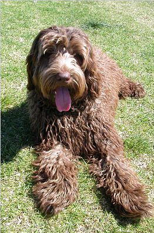

Лабрадудль

(англ.
labradoodle) — метис или породная группа собак,созданная путём скрещивания лабрадора-ретривера и пуделя.
«Лабрадудль» (Лабрадудель) впервые появился в 1955 году, но не был популярным до 1988 года, когда смесь была
использована в качестве собаки-поводыря.
Лабрадудли
используются в канистерапии, поисково-спасательной службе, дабы были.
С лабрадудлями занимаются также и спортом: аджилити, фрисби, фристайл.